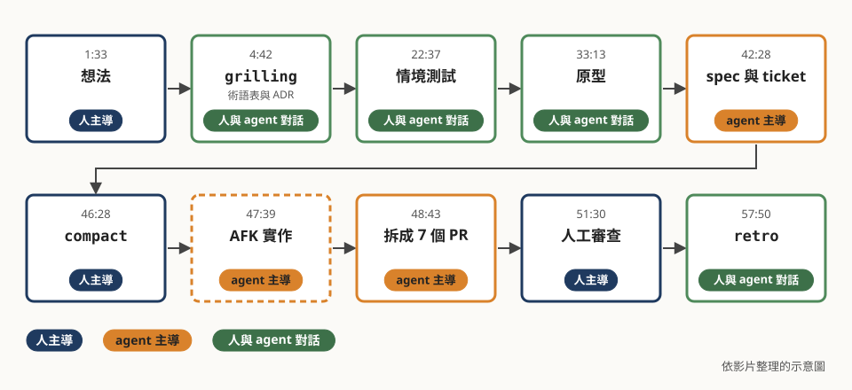
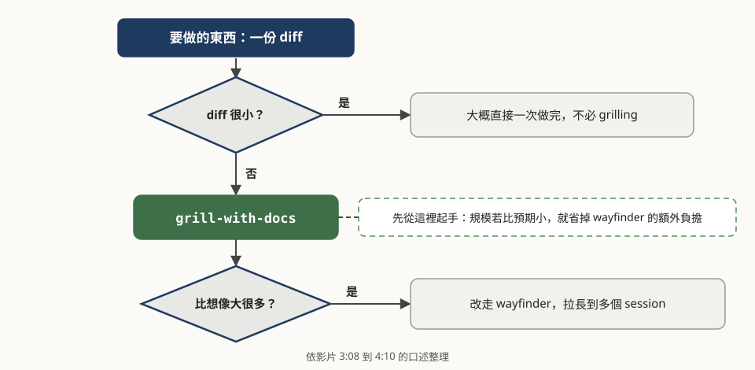
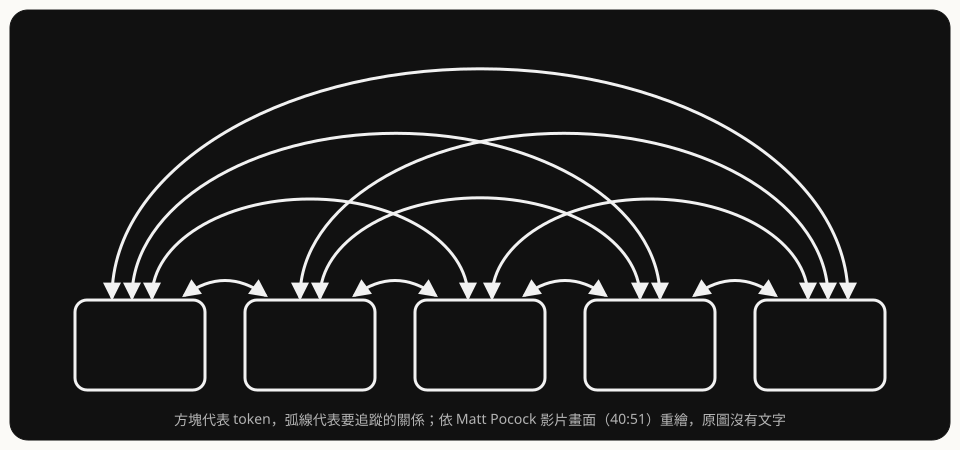
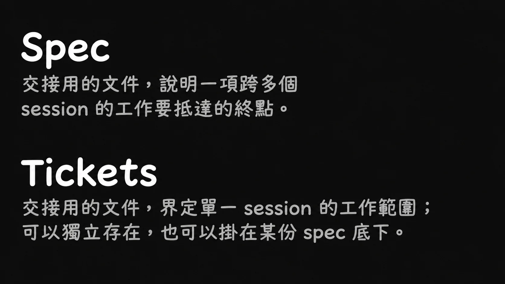
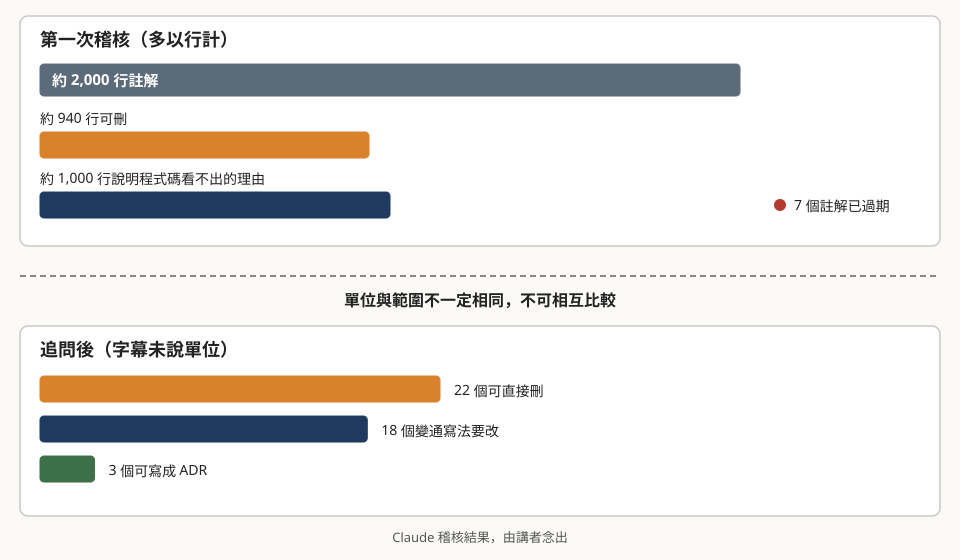

Matt Pocock 開場就說：「你們一次又一次地要我展示我的開發流程究竟是什麼樣子」（00:00）。這次他把一個真正要用的功能從頭做到尾：改造自己影片製作工具裡的縮圖編輯器，讓 diagram 可以直接畫在縮圖裡他的臉旁邊（00:54）。他預告會特別著重兩個 skill（00:26）：開工前的 grill-with-docs，和做完後回頭檢討整批 session 的 retro。grilling 是他的叫法，指讓 agent 逐題追問，把想法問清楚。
三十秒版
- 他要讓 diagram 直接畫在縮圖裡自己的臉旁邊，開工時卻說完全不知道怎麼做。
- 動手前，他用 grill-with-docs 讓 agent 逐題追問，先把名稱與資料模型問清楚。
- 外觀交給原型：agent 做了三個版本，他只留一個，再寫成 spec 與 ticket。
- 他把對話 compact（壓縮成摘要），交給 implement-spec 實作，自己 AFK（人不在電腦前）；回來得到一個大 PR，再請 agent 拆成一串堆疊的小 PR（他口述說七個，畫面標示共九個）。
- 他審程式碼，除了確認能動，也在意產出程式碼的系統；他留下的 12 則 review comment 交給 retro，變成一批 issue 與 lint rule 提案。
- 他說自己在前段對齊時最有價值，最後審查時也很有用；grilling 和 retro 是他與系統互動的兩個主要時間點。
這篇怎麼讀
全片是 Matt Pocock 一個人的螢幕錄影加口述，環境是 Claude Code、Opus 5.5 搭配 medium effort（04:25）。片中數字與評價多是講者自述；他常念出畫面上 Claude 的提問與回覆，本文寫成「Claude 回覆說」，不算成他的話。利益關係：他是 mattpocock/skills 的作者，示範的就是自己的 skills，開場也推了自己的課程（01:23）。內容依影片機器字幕整理，存疑句與畫面內容另依影片聽寫和影格核對（見〈製作說明〉），時間戳可以直接跳到影片對應位置。

他想做的東西，和他不知道怎麼做的部分
他的課程與影片都在自己寫的工具 Course Video Manager（CVM）裡製作（01:33）。現行的縮圖做法要繞一大圈：切到 diagram 產生器截一塊視窗，再貼回縮圖（02:08）。他想直接在縮圖上畫，卻坦白：「我真的完全不知道該怎麼打造這個功能。」（02:57）
開始新工作時，他先走一棵決策樹選 skill，把要做的東西看成新舊程式碼庫之間的 diff（03:25）。他畫的決策樹第一個問題是「diff 夠小嗎？」。他說夠小就大概直接一次做完（One Shot，03:32）；這次他知道東西不小，所以選 grill-with-docs（03:42）。做到一半如果發現比想像大很多，再改走 wayfinder，把 grilling 拉長到好幾個 session（03:45）。各節點的說明見下圖。

grilling：先把名稱與資料模型問清楚
這次 grilling 的重點放在領域建模，也就是經典的 DDD（領域驅動設計）技巧（00:38）。
講為什麼，由人決定何時停
他的第一段提示是口述的（04:53）：他喜歡縮圖產生器逼自己把臉放上畫面，不喜歡附 diagram 的繁瑣流程，UI 會長什麼樣子也不知道（05:27）。說完他提醒觀眾，這段提示只講要解決的問題，沒說確切該做什麼：「如果我給它原因，agent 就會更放得開手，自己去產出解決方案，或者也許就解決方案跟我討論一下。」（05:53）
他設想觀眾可能會想：這和 plan mode 之類的做法比起來好在哪（09:41）。他的回答是，這個 skill 讓人和 agent 在動手前先對要做的東西取得共識，產出會更可預測（09:56）。對話也要由人主導：「不是 agent 在 grilling 你。」（14:29）人隨時可以喊停。
術語表、ADR 與柴斯特頓的籬笆
他的術語表大約 560 行，定義了這個 repo 的主要概念（10:46）。照它的定義，diagram 其實是一組 diagram snapshot，也就是拍 clip 當下那張 diagram 的複本（11:07）。他擔心要放進縮圖的東西「只是一個單一 snapshot」（12:12）。這些詞外行人聽來像行話，他說模型聽得懂，因為術語檔就在它的 context 裡（12:29）。術語表也在 grilling 中更新：Claude 提議新增 thumbnail 與 cutout 兩個詞條（13:43），之後又提出 thumbnail drawing（15:06），並建議避開 thumbnail diagram（15:16）。
agent 也讀了一份過去的 ADR（架構決策紀錄）（16:15）。兩份文件分工不同：術語表某種程度上描述了應用程式目前的樣貌（16:35），ADR 負責解釋當初為什麼這樣決定（16:40）。他說 ADR 要處理的，是典型的「柴斯特頓的籬笆」問題，並念了 G. K. Chesterton 在《The Thing》裡的段落（archive.org 全文）：路上橫著一道籬笆，看不出它有什麼用就不准拆，先去想清楚（16:54）。
他答不出來的題目，和 agent 越線的時候
接下來的題目他自己也卡住：要接軌到既有的 diagram 與 snapshot，還是換個資料模型和名稱，「本質上是在決定要不要把兩條線混在一起」（18:34）。他比較傾向不混，但擔心日後會後悔，只是又說不出非得綁在一起的具體情境（18:41）。Claude 回覆說會順著他的直覺分開，複製時記一個可為空值的 started from snapshot 參照就夠了（19:14）。他對用詞這麼執著，是因為語言將會構成往後所有東西依附的資料模型（19:41）。
agent 也會越線。它自作主張替 thumbnail drawing 寫了詞條（20:58），又未經詢問建了一份新的 ADR（21:19）。他說：「我希望這個決策是在 grilling session 期間由我來做出的決定。」（21:24）聽完 Claude 列的建 ADR 理由，他說確實同意（22:09）；他願意在這裡花時間，因為少了這一步，下一次執行時效果會差很多（22:23）。
情境測試：三個候選名
回到命名。他也同意 thumbnail diagram 這個詞有點彆扭，於是請 agent 給幾個選項做情境測試（22:31）：列出描述系統的句子，看換成不同詞彙時好不好說（22:57）。Claude 的表格比較三個候選（23:09），他邊念邊評，下表把他的評語和 Claude 表格的判斷分開列：
| 候選名 | Matt 的評語 | Claude 表格的判斷 |
|---|---|---|
| thumbnail diagram snapshot | 有點太長、太囉唆（24:14）；snapshot 不能變動，在 snapshot 裡拖曳箭頭的說法不通（23:47；這句是他的評語還是 Claude 表格的判斷，字幕分不出來） | 字幕未念出 |
| thumbnail diagram | 這是他自然會說出口的詞（24:18） | 唯一的缺點是讀起來像某種 diagram（25:02） |
| thumbnail scene | 不是他會用的字，比較像寫程式的詞彙（24:22）；術語表別處已經有 scene（24:39） | 各情境基本上都沒問題，只有「Matt 工作時會大聲說出來」那一列例外（24:08）；技術上最清楚，但不是他說話的方式（24:57） |
| thumbnail drawing（Claude 先前提議） | 不喜歡這個詞，念起來不順口（25:17） | 先前曾建議用它（見上文） |
結論是 thumbnail diagram：只要有一份 ADR 說明它是 diagram 又不完全是 diagram，這個名稱就說得通（25:06）。
其餘問題
兩個核心問題想通後，他請 agent 一次問多題（25:37）。其中幾題：component 會和 React 的 component 撞名，改成 diagram component（28:05）；他不要兩個有微小差異的 diagram 編輯器（28:56），後來 Claude 問要不要把 playground 的編輯器抽成共用元件，他立刻答應（30:57）；Claude 指出刪影片會連帶硬刪除縮圖（29:56），他說這些資料很寶貴，所以「幾乎總是選擇軟刪除」（30:39）。
agent 也會漏看。畫面上的第 26 題說搜尋 diagram 的步驟目前還不存在，他認為這不對：「它實際上沒有注意到程式碼中的某些東西，這讓人有點惱火。」（31:14）在他看來，grilling 也是和程式碼保持接觸的方式（32:02）。
原型：看了才知道自己討厭什麼
grilling 中途，agent 就問要不要先做幾種編輯介面的原型（12:54）。他的看法是：「如果它做出你不喜歡的東西，那往往比你從喜歡的東西中能學到的還要多」（13:23）。三個版本裡，B 版把臉放進畫布，第三版是分割檢視，他都不滿意，直說分割檢視根本是垃圾（34:08）。A 版跟他想像的蠻接近（33:27），他選了 A，只繼續迭代它（35:37）。
他說，這段人在迴圈裡陪著 agent 的時間，是用來大幅縮小 agent 的決策空間：外觀和資料模型都定了（36:41），之後他 AFK，agent 只要把這兩樣東西接起來（36:53）。A 版迭代出的新版本放進縮圖編輯器後，他發現自己開始一路回「對、對、對」，代表雙方已經一致，grilling 快收尾了（38:49）。
這一版匯出圖右邊還有一條小白條。agent 打算先在自己的瀏覽器重現白條，再讀像素顏色找出白色從哪裡來（39:15）。他說「這一代的 agent 似乎非常、非常擅長這件事」（39:33）。他有一點不滿：agent 沿用了已用到 260k token 的子 agent，已經相當深入 dumb zone（39:54；dumb zone 見下一節）。結果 Claude 回覆說白條不算問題，只是 Windows 125% 縮放下預覽圖最後一欄像素只畫了一部分（42:30）。
smart zone 與 dumb zone
等原型的空檔，他回答了 smart zone 與 dumb zone 的問題。他說這個說法不是他原創，是 Dex Horthy 提出的：agent 到了大約 150k token，會開始變得稍微笨一點（40:27）。他在畫面上秀出一張五個方塊的圖，把方塊想成一個個獨立的 token（40:51），方塊之間拉滿弧線，表示每個 token 都要和其餘所有 token 建立關係；關係數以平方速度成長，最後要龐大的記憶體和工作量才能在雜訊中聽出訊號（41:01）。

至於什麼時候該清 context，他說以前幾代模型大概 120k 就得清（41:32），現在「它真的更像是一種成本與最佳化的問題」（41:50）。agent 在 dumb zone 未必會產生幻覺，比較像是成果變差（42:00）；context 到了約 750k token 時運作非常昂貴，快取一失效，先前所有 token 都要再算一次、再計一次費（42:17）。
spec、ticket 與 compact：把決策空間縮到最小
原型確定後，他叫用 to-spec 與 to-tickets（43:52）。「spec 就像是一份目的地文件」（44:07）；ticket 界定每個 session 的範圍，每個子 agent 拿一張。Claude 提的拆法是 9 張，他說「9 張對我來說看起來沒問題」（44:47），後來 PR 內文列的 ticket 是 #2725 到 #2733。這時他要儘量不給 agent 決策空間，理由是「你給 agent 越多的模糊彈性，它的表現就會越差」（45:41）。spec 建成一個 GitHub issue，裡面大約 47 個 user story（46:08）。

接著他 compact 目前的對話，再對 spec 下 implement-spec（46:29）。他說最近更常用 compact，它變得可靠得多（46:44），但 auto-compact 仍有點不可靠（46:53）。他預估大約要一小時或 45 分鐘，做完會得到一個可以合併的 PR（47:28）；這種時候，他會離開電腦，信任它 AFK 自己跑（47:39）。
21,000 行，他怎麼審
回來時 PR 已經在那裡，他念出新增 21,000 行；畫面上這個草稿 PR 顯示 +21,349、−371，共 37 個 commit、71 個檔案（48:21）；開場他說的是「我想大概有 25,000 行」（01:11）。接下來他做了平常不做的事：在觀眾面前審這個 PR（48:44）。他想試另一種把大 PR 拆小的方法，「我目前還沒有專門處理這個的 skill」（48:58）。
他請 agent 用堆疊式 diff 拆成較小的區塊，每塊理想上能獨立審查，希望是一連串雙向門，最後以一道單向門作結；定義在 pr skill 裡（49:05）。雙向門的 PR 合併後隨時可以 revert，單向門則是合併後就非常難以還原的 PR（49:30）。他說 agent 相當擅長把大 PR 拆成小 PR（49:53）。
Claude 先提六個 PR 的方案，最後一個很大。他問能不能用 feature flag 讓 thumbnail diagram 先上線、必要時再收回（50:09），Claude 就把最後那個再拆成四個，改成九個一組、flag 先關著、最後一個 PR 才打開 flag 的方案（51:03），他說「我們就採用這個版本」（51:17）。第一個 PR 出現時他說「七個 PR 中的第一個」（51:31），但 PR 內文標著 Stack 1/9，整串是九個。這一個是術語表詞條、diagram component 和 ADR 0060（51:47），第二個是抽出共用的 diagram 編輯器（51:56）。

他也審產出程式碼的系統
他這次逐行審，是因為知道觀眾想看他怎麼審（52:04）；他不認為每個人都需要逐行審。審查當然要確認東西能動（52:27）；這次他是唯一的使用者，所以全部合併、最後再來檢查（52:39）。看程式碼的另一個用意是，他也關心產出這段程式碼的系統（52:51）。
他說的不喜歡，是指他對那個 pattern 有個假說，「認為它正以負面的方式影響我 agent 運作的環境」（53:09）。這次他的 review comment 大致分三類：
- 註解太多，會讓 agent 要更新的面積變大（53:24）。
- 用
as欺騙 TypeScript，他要禁止 shared utilities 以外的as（54:07）；Pick加交集型別也改用interface extends。 useSearchParams用魔術字串抓參數，改名時不會有型別錯誤，他要更型別安全的設計（55:40）。
他的方向很明白：「我試圖逼它設計出能消除所有細微模糊處、替 agent 省去所有決策的 API。」（55:33）規則不必第一天就強制，可以棘輪式逐步收緊（55:06）。
接下來的 PR，他念到 500 行（56:21）與大約 2,500 行，字幕沒說是那個 PR 的大小還是累計（56:39）。這些 review comment 他都不當成 blocking；整串 PR 裡他唯一認為必須審的，是替 thumbnail diagram 只新增欄位的那個 migration（57:06）。最後他請 agent 依序合併所有 PR，合併放到背景子 agent 去跑（57:54）。
retro：把 review comment 變成系統
合併在背景跑的時候，他用同一個 session 叫用 retro，請它看這次執行的所有 agent session，也把他的 review comment 抓進來（58:35）。對話雖然 compact 過，之前的 session 都存在本機硬碟，仍然讀得到（58:47）。Claude 回覆說，它正派 agent 梳理 30 幾個 session 的逐字紀錄和他的 12 則 review comment（59:19）。

Claude 的結論是，12 則 review comment 有同一個根本原因：CVM 的書面規範沒有涵蓋這些點（59:53），coding standards 與前端 state 的文件寫的反而是他否決的 pattern，main 上已經有數千個實例（59:59）。他的反應是：「看來我顯然是在試圖讓一艘巨大油輪掉頭。」（1:00:09）
Claude 接著列出一份排序過的清單，前四項是：
- 第 1 項，把 review comment 轉成棘輪式收緊的檢查；Claude 說光是 shared utilities 以外的
as就會抓到 2,000 個實例（1:00:19），他說這些都該在 repo 開成 issue（1:01:35）。 - 第 2 項，修正那些在教被否決 pattern 的文件，他說顯然要做（1:01:57）。
- 第 3 項，原型程式碼被直接複製、沒有重新實作，Claude 建議修改 prototype skill 與 implement-spec 的 implementer brief（1:02:07，報告畫面原文）；他請 agent 到 mattpocock/skills 開 issue，說他的 skill 常常就是這樣改進的（1:02:17）。
- 第 4 項，單一 agent 涵蓋不了大型 diff（1:02:25），他說這是 code-review skill 沒能發揮到極限；畫面上的報告寫 Standards reviewer 在 400-word 的限制下，用 14 次 tool call 處理一個 66 個檔案的 diff（審查當時的範圍，PR 頁面最後顯示 71 個檔案；1:02:56）。
他對這次 retro 的評價是「非常非常棒」（1:03:54），估計可能整理出大約 20 個 issue，大概不需要 grilling，可以直接交給 agent、拿回 PR（1:04:01）。
註解稽核：他要 agent 更激進
retro 清單第 1 項要把 review comment 轉成檢查，註解卻是例外，Claude 說沒有合適的 lint rule。他也說：「是啊，我不知道該拿註解怎麼辦。」（1:01:06）他提到 Lauren Tan（poteto）直接禁止註解，自己有點想往那個方向走，但考慮分階段（1:01:08）。Claude 的統計是，新功能 features/diagrams 有 18% 的行數是註解，整個 repo 平均 12%（1:01:21）。
retro 收尾時，Claude 回覆說註解稽核的結果：大約 2,000 行註解裡，大約 940 行現在就可以刪，大約 1,000 行解釋了程式碼裡看不到的原因，另有 7 個註解已經過期（1:04:23）。他說「這些註解有點像是 agent 放在那裡的遮羞布」（1:04:49），要它更激進一點，分出三類：可以移進 ADR、可以改成不需要變通的寫法、可以直接刪掉（1:05:18）。Claude 同意，變通寫法旁的註解通常標記著那裡的程式碼本該換個方式設計（1:05:42）。追問的結果，Claude 說 22 個可以直接刪除、18 個變通寫法需要修改（1:07:09），3 個可以寫成 ADR，這 3 個他都同意適合寫成 ADR（1:07:37）。

試用成品與他認為自己的價值在哪
整串 PR 合併到正式環境後，他打開新的縮圖編輯器，擷取臉部、加上文字、畫框（1:06:07），評語是「還挺不錯的」（1:06:30）。接下來他會進去做 QA，把可以改進的地方開成 issue，交給 agent 一口氣做完，大概連 grilling 都不用（1:08:03）。
片尾他說：「我在一開始的對齊階段最有價值」（1:08:41），把一切討論清楚、理解要做什麼、做出原型；到了最後，他說自己也很有用，技術專業派得上用場，能貫徹自己的程式碼標準（1:08:50）。grilling 和 retro 是他與系統互動的兩個主要時間點（1:08:59）。
講者說的與官方不太一樣的地方
以下各項只列有實質差異者，官方資料讀取日為 2026-11-20。
- implement-spec 的終點：他說做完會得到一個可以合併的 PR（47:33），官方 implement-spec SKILL.md 寫的目標則是單一 integration branch，PR 是條件式的產物，只有 issue tracker 以 PR 結案或使用者要求時才開 draft PR。他在片中用的是 GitHub issue，所以看到 PR 並不矛盾，差別在官方語意不把 PR 當作預設終點。
- ADR 何時建立：agent 自己說這個決策並不難逆轉（21:58），仍未先詢問就建了 ADR（21:19），官方 domain-modeling SKILL.md 則要難以逆轉、沒有 context 會意外、有真正取捨三者同時成立，才提議建立。
- smart zone 的 150k：他把約 150k 歸給 Dex Horthy（40:27），但 Horthy 在 AI Engineer 講座講的是約 40% 的 context 利用率開始邊際遞減、視任務而定，約 150k 這個數字則見於 Matt 自己 skills repo 的 CHANGELOG，記錄由約 120k 改成約 150k。
- Lauren Tan 與註解：他說 Lauren Tan「直接禁止寫註解」（1:01:08），她在〈All Code Is Slop (Except Mine)〉演講說的是在 Grabot 禁掉 99% 的註解，用的詞是 escape hatch。
- retro 讀 review comment：他說 retro 會用 GitHub CLI 抓他的 review comment（58:54），官方 retro SKILL.md 沒有這一步，這次是他在提示裡要求一併讀取（58:40）。
讀這支影片要記得的限制
- 個人軟體，單人使用。拆 PR、feature flag 那段是他「假裝這是一個正式環境的系統」（50:17）。
- 不是平常的做法。鏡頭前審 PR、用堆疊式 diff 拆 PR、逐行審，都是他說平常不這樣做、或因為有觀眾才做的（見上文）；這套取捨放到多人協作、對外服務的系統，影片沒有示範。
- 工具仍有毛病。auto-compact 仍有點不可靠，agent 會擅自寫詞條、建 ADR（20:52），也會漏看既有程式碼（見上文）。
- 成本與耗時只有零星線索。影片剪過，沒有交代總花費或總 token 用量；實作時間只有他事前「大約一小時或 45 分鐘」的預估（47:28）；畫面上偶爾看得到 context 用量（如 83.6k，標示 8.0%，1:01:55；由此推得視窗約 100 萬 token，這是本文推論），retro 報告寫事後把整合分支重切成堆疊，用了約 160 次 tool call，由 7 個 builder 子 agent 分工（1:03:10）。
- 數字是自述。行數開場他估約 25,000（01:11），畫面顯示新增 21,349 行、刪除 371 行（48:21）；PR 數量他口述七個，畫面標示九個；session 數開場他說「我想我們在這支影片裡大概進行了 30 個 session」（01:07），user story 數、註解比例與稽核數字也都是他口述或念出 Claude 的回覆，本文沒有逐一核實。
- 經驗談沒有數據。講原因 agent 就更放得開手、產出更可預測、agent 擅長拆 PR、決策空間越少表現越好、這一代 agent 似乎很擅長自己重現問題找原因，這些是他的經驗談，影片沒有附數據。
- 沒有對照組。他說這套做法比 plan mode 之類的方式更能事先對齊（09:41），影片沒有用同一個功能比較兩種做法的結果。
重點結論與實際啟示
下面三件是他實際做的，各自附上適用條件：
- 他的做法：對 agent 講為什麼，不急著講做什麼。需求還模糊、自己都說不清 UI 長什麼樣子時，先描述問題與在意的地方，讓 agent 用追問把選項攤開；這是他的經驗，片中沒有對照。條件（本文推論）：要有時間陪它一題一題回答，並且由人決定何時停。
- 他的做法：先定名稱與術語表，再談實作。把領域詞彙寫成一份放在 repo 裡、agent 每次都讀得到的檔案，用詞拿不定時，用情境測試把候選名放進實際句子裡比；決策理由寫成 ADR，但要不要建，他希望在 grilling 中由自己決定。條件（本文推論）：適合會長期維護的 repo。diff 很小的改動，他自己也是直接做。
- 他的做法：把 review comment 交給 retro，讓它變成 lint rule 提案、文件修正或 issue。每則 comment 背後先有一個假說：這個 pattern 會讓 agent 的工作環境變差；規則可以先不強制、再逐步收緊。條件（本文推論）：session 紀錄要保存下來讓 retro 讀得到，也要有 issue tracker 承接後續。他用的是 GitHub。
三件都出自一個人的個人專案與一次剪輯過的錄影，適用範圍見上一節。
製作說明：這篇導讀由 AI 模型完成
本導讀的分析與撰稿由 AI 模型完成，不是人類分析，也沒有經過人工逐句校稿。
字幕與翻譯。 影片內容依 YouTube 機器字幕（en-orig）整理，少數語意不明的句子沒有引用；引文的中文是翻譯而非講者原話，字幕可能有誤。逐句繁中翻譯由 agy（gemini-3.8-flash-medium）完成，再由 Sonnet 逐章修詞、Opus 統一審查。完整譯文見全文譯本，雙語同步播放器見字幕同步播放器。
看影片的部分（第二版）。 另請 agy（gemini-3.8-flash-high）直接看影片：對 22 個存疑字幕窗口（其中 4 個是數字句）各做兩次獨立聽寫，兩次一致才採用，共改 4 句中文字幕（英文機器字幕欄維持原文）；並掃描全片畫面，找出作者自製的圖。agy 只用於聽寫與讀畫面，沒有參與事實查證；它讀到的畫面數字有多處誤讀，所以凡入文或入圖的數字與文字，都由 AI 主控（Claude Sonnet 5.5）取 720p 影格逐張檢視確認，不是人工核對。全片仍未逐句對照原音。
撰稿、查證與圖片。 主控為 Claude Sonnet 5.5，撰稿由 Opus 負責；對官方 repo 與外部說法的查證由 Sonnet subagent 進行，並經主控核對一手來源，重要說法須有一手來源，只有單方者降級標示，只用 Claude 系 subagent 與 gh 等工具，沒有另請其他模型交叉查證。資訊型示意圖由 Sonnet subagent 以程式繪成 SVG 並經檢查，封面與比喻插畫由 Codex 的 imagegen 製作。作者在影片裡秀出的決策樹、smart zone 方塊圖與 Spec／Tickets 投影片，以及畫面上 Claude 的 PR 對照表，另譯成台灣用語繁體中文重繪（前三者為 SVG，Spec／Tickets 為 imagegen），圖下標示影片出處與秒數，版權屬原作者。
審稿與修稿。 初稿經兩位獨立的 Opus 審稿人（事實、編輯）、合併修稿、終審與總編輯潤稿；因篇幅過長，另由 Opus 精簡兩次（其中一次依獨立評分的意見），發布後再通讀潤稿一次。第二版的修訂由一位 Opus 依計畫執行，並由兩位獨立的 Opus 審稿人分別核對事實（其中一位自行重新取影格核對）與編輯一致性，意見由 AI 主控落實。
來源清單
- Watch me ship a 21,000-line feature with mattpocock/skills，Matt Pocock，YouTube，2026-11-18 上傳，https://www.youtube.com/watch?v=jVBlkOF8sHk
- mattpocock/skills，官方 GitHub repo，2026-11-20 讀取（最新 release v1.3.2，2026-10-29），https://github.com/mattpocock/skills
- implement-spec SKILL.md：https://github.com/mattpocock/skills/blob/main/skills/engineering/implement-spec/SKILL.md - domain-modeling SKILL.md：https://github.com/mattpocock/skills/blob/main/skills/engineering/domain-modeling/SKILL.md - retro SKILL.md：https://github.com/mattpocock/skills/blob/main/skills/engineering/retro/SKILL.md - pr SKILL.md：https://github.com/mattpocock/skills/blob/main/skills/engineering/pr/SKILL.md - CHANGELOG.md：https://github.com/mattpocock/skills/blob/main/CHANGELOG.md
- No Vibes Allowed: Solving Hard Problems in Complex Codebases，Dex Horthy（HumanLayer），AI Engineer，2025-12-02，https://www.youtube.com/watch?v=rmvDxxNubIg
- All Code Is Slop (Except Mine)，Lauren Tan，AI Engineer，2026-11-14，https://www.youtube.com/watch?v=O_zcc6Xl12g
- The Thing: Why I Am a Catholic，G. K. Chesterton，1930 年版（第 IV 章〈The Drift from Domesticity〉開頭），Internet Archive 掃描全文，https://archive.org/download/thingwhyiamcatho0000ches/thingwhyiamcatho0000ches_djvu.txt